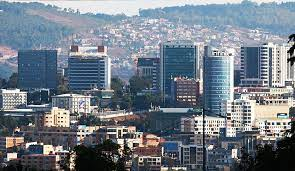
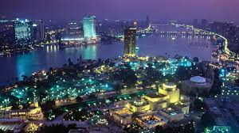
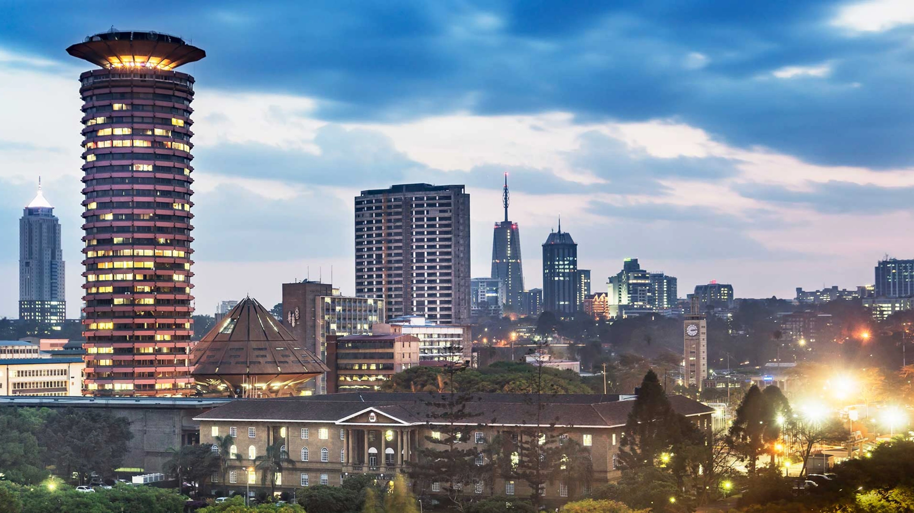
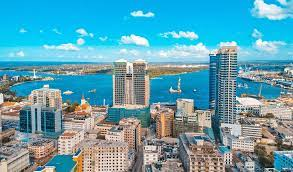
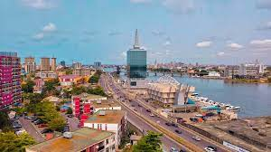

Kigali is the capital and the largest city of rwanda, located near the centre of the country.It is known for its clean streets, organized neighborhoods , and green, hilly landscape. The city is built across several hills and valleys, giving it scenic views and a mild climate throughout the year. Kigali is Rwanda's main eceonomic, political, and cuktural hub. It hosts government institutions, international organizations, businesses, and educational centres. THe city has modern infrastructure, including well maintained raods, a growing public transport system, hotels and shopping centres

Cairo is the capital and largest city of Egypt, located along the Nile River in the northeastern part of the country. IT is one of the Oldest and most historically rich cities in the world, often called "the city of a Thousand MInarets" because of its many mosues and Islamic architecture. Cairo is Egypt's political, economic, and cultural centre. It is a busting metropolis with a mix of anciebt history and modern urban life. The city is home to major government institutions universities, businesses, and media organizations. Its street are lively and crowded, reflecting the fast paced rhythmn of daily life

Nairobi is the capital and largest city of Kenya, located in the central highlands of the country. It is known as the "Green City in the Sun" because of its pleasant climate and many parks and green spaces. The city at a relatively high altitude, giving it mild weather throuhout the year.

Dar is the largest city and main commercial centre of tz. located along the India ocean coast. Although Dodoma is the oficail capital. DAr remains the country's most important city for business, trade and transportation. It name means Haven of peace in Arabic Dar has a tropical climate, with warm temp year round and caostal beaches nearby

LOagos is the largest city in NIgeria and one of the fastest growing cities in Africa. It is located along the Atlantic coast in the southwestern part of the country and is know for its energetic lifestyle, busy streets, and vibrant culture. Lagos is NIgeria's main economic abd commercial hub. It hosts major industries such as finance,trade, entertainmebt, tech and manufuactring Including Nollywood and a globally influential music scene